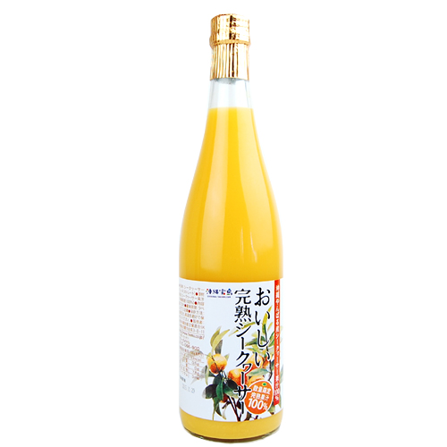
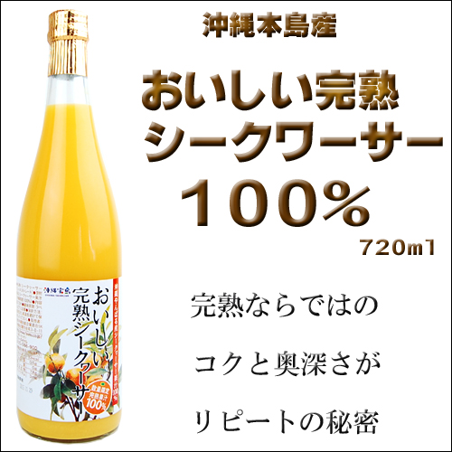

おいしい完熟シークワーサー100％ 720ml
冬の沖縄ならではのプレミアムなシークワーサー100％果汁です。
一般的には酸味のある青切りの状態で収穫し、調味料やお酒の割り剤などに使用されるシークヮーサーを黄金色になるまで完熟させ、甘さと酸味のバランスがちょうどいいジュースに仕上げました。
冬の時期しか収穫できない完熟シークヮーサーを使用するため、数量限定の商品です。
青切りシークヮーサーに比べ知名度の低い完熟シークヮーサーですが、そのコクと奥深さは完熟ならでは。
香り深く、甘みと酸味のバランスがとれた完熟シークヮーサーをぜひお楽しみください。
○飲み方
オレンジに似た味わいのなかに独特な風味をもち、そのままジュースとしてお飲みいただけます。
濃縮還元なしの100％果汁飲料ですので、ゼリーなど素材を活かしたお菓子作りにも使えます。
- 商品概要
- アレルギー
| JANコード | 4582112265240 |
|---|---|
| 原材料 | シークワーサー果汁100％ |
| 内容量 | 720ml |
| 賞味期間 | 製造から300日 |
| 保存方法 | 直射日光、高温多湿を避け、常温にて保存 |
| 本製品には枠内を塗りつぶしたアレルギー物質が含まれています。 | |||
| 小麦 | 卵 | 乳 | 大豆 |
| 鶏肉 | 豚肉 | ゼラチン | |
| 栄養成分 1個 (32g)あたり | ||
| エネルギー | ||
| たんぱく質 | ||
| 脂質 | ||
| 炭水化物 | ||
| ナトリウム | ||